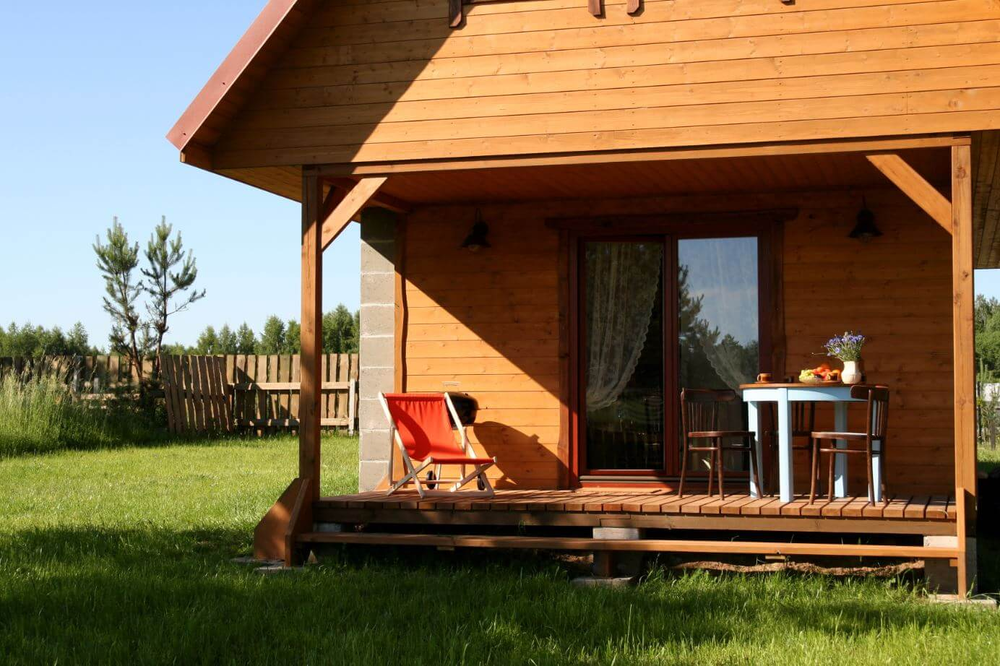

Opis
Zapraszamy do nowo pobudowanego domku na Mazurach we wsi Skorupki (9 km od Mikołajek). Na parterze znajduje się salon z aneksem kuchennym oraz łazienka (prysznic). Na piętrze są 3 dwuosobowe sypialnie (2 pokoje z pojedynczymi łóżkami/1 pokój z łóżkiem małżeńskim). W salonie znajduje się stół z krzesłami oraz rozkładana kanapa (2-osobowa). W aneksie kuchennym do dyspozycji gości jest lodówka, zmywarka, płyta indukcyjna, mikrofalówka, czajnik i pełna zastawa kuchenna (sztućce, szklanki, talerze, garnki). Zobacz galerię.
Opłata za wynajęcie wynosi 270 zł/dobę + dodatkowe koszty poniesione w trakcie pobytu tj media, śmieci.
Jeśli szukasz ciszy i spokoju w otoczeniu przyrody to jest to miejsce właśnie dla Ciebie. Domek jest położony na skraju lasu w odległości 250 m od jeziora Tałtowisko. Nad jeziorem jest ogólnodostępna plaża, przystań oraz tawerna (możliwość stołowania). Istnieje możliwość rejsów spacerowych po mazurskich jeziorach za dodatkową opłatą. Okolica zachęca do pieszych i rowerowych wycieczek. Natomiast wsiadając do samochodu można zobaczyć:
zamek krzyżacki w Rynie,
ferma jeleniowatychw Kosewie,
Rezerwat i hodowla Tarpanów w Popielnie,
Leśniczówka Pranie - muzeum,
w Giżycku: kościół ewangelicki z XIX w, most obrotowy na kanale Łuczańskim, twierdza Boyen, Muzeum fauny i flory
Owczarnia - Muzeum Mazurskie,
Wilczy Szaniec w Gierłoży,
w Kętrzynie: zamek krzyżacki z XIV w, kościół św. Jerzego z XIV w.
Święta Lipka - sanktuarium maryjne,
zamek biskupów warmińskich z XV w. w Reszlu,
barokowy zespół pałacowo - parkowy w Sztynorcie,
Kanał Mazurski oraz kilkunastometrowe śluzy w Guji i Leśniewie
w Mamerkach Kwatera Naczelnego Dowództwa Wojsk Lądowych (OKH),
w Pozezdrzu polowa kwatera Himmlera,
grobowiec rodziny Farenheidów w kształcie piramidy w Rapie,
ostoja żubrów w Wolisku,
Paprotki - wykopaliska grodziska i cmentarzyska Galindów sprzed kilku tysięcy lat
Wioska Żeglarska, imprezy kulturalne rozrywkowe w Mikołajkach,
rezerwat Łuknajno (siedlisko lęgowe 95 gatunków ptaków, a ogólna liczba zaobserwowanych gatunków wynosi ponad 175),
Krutyń - spływy kajakowe,
w Wojnowie zespól klasztorny staroobrzędowców - Filiponów z XIX w.,
Kadzidłowo - rezerwat zwierząt.